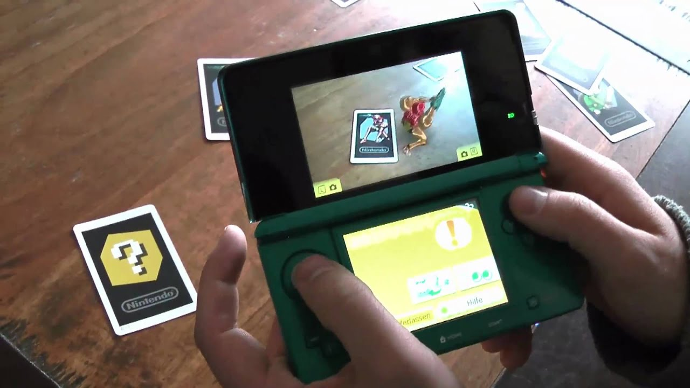
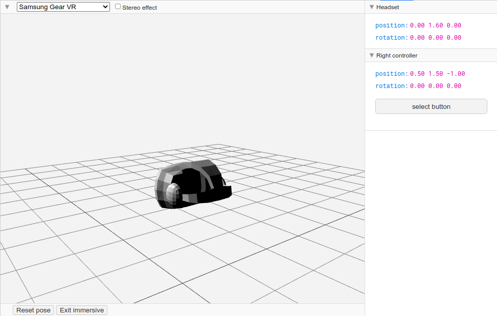
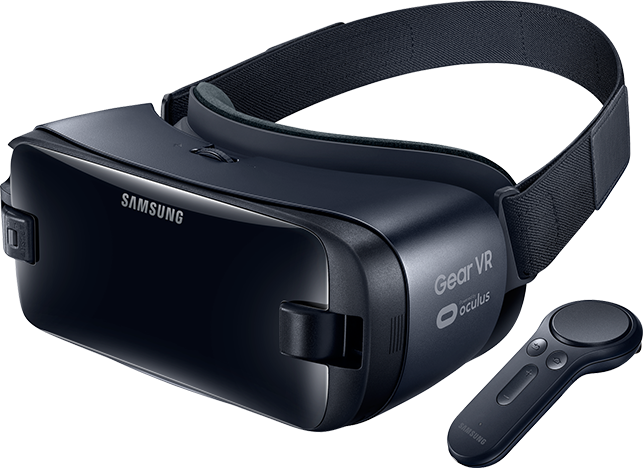

Wat is WebXR?
Wat is nu juist WebXR? Wat zijn de mogelijkheden vandaag wat zal mogelijk zijn in de toekomst? W3C Immersive Web chair, Ada Rose Cannon legt de mogelijkheden vandaag en de verwachtingen voor de toekomst mooi uit.
WebXR is dus de combinatie van Virtual Reality en Augmented Reality. De WebXR API is de device API die het toelaat te communiceren met sensoren en schermen van immersive hardware, waaronder dus VR-headsets (Oculus, Vive...) en AR-headsets (HoloLens...). De moeilijkheid van deze webstandaard is dat het niet alleen de huidige hardware en mogelijkheden moet ondersteunen maar ook de toekomstige hardware.
AR en VR zijn eigenlijk niet zo nieuw, een eerste vorm kon je al vinden in 1839 met de View-Master, een manier stereoscopische afbeeldingen te tonen.
Mijn eerte bewuste aanraking met XR is enkele jaren geleden met de Nintendo 3DS. De 3DS had kaartjes die je met de camera kon scannen en er verscheen toen een Nintendo Character op het scherm die leek in de 'echte' wereld aanwezig te zijn.
Hoe dit nu leren?
Doordat WebXR een relatief nieuwe standaard is, die dus ook nog niet in elke browser wordt ondersteund, heeft deze voorlopig een kleine community waar je terecht kan. Op YouTube bestaan er 'tutorials' en uitlegvideos maar deze zijn zeer beperkt! De community wordt wel elke dag groter met ervaren mensen die voorbeeld van UnityXR mogelijkheden overkomen naar WebXR om hierin mee verder dit te ontwikkelen.
Documentatie
De officiële documentatie kan je op developer.mozilla.org vinden. Twee leuke sites waar er veel uit te leren valt is mozilla's mixedreality site en de immersive web site.
Libraries
WebXR gebruikt de WebGL API, deze is redelijk low-level waardoor er vaak een library gebruikt wordt. Enkele libraries zijn ThreeJS, AFrame, BabylonJS... Deze hebben ingebouwde 3D- en XR-functionaliteiten die het toelaat om relatief snel een XR-applicatie te bouwen.
Udemy
In het vak Web Topics Basics werd gekozen voor ThreeJS. Op Udemy kan je een zeer goede cursus volgen die de basics aanleert: Hands on ThreeJS 3D web visualisations. Verder heb ik me er nog in verdiept met Three.js and TypeScript en nog specifieke WebXR-cursussen namelijk Learn to create WebXR, VR and AR, experiences using Three.JS en Learn A-Frame And Get Ready For WebVR .
WebXR Leergroep
Voor de Leergroep van Web Topics Basics heb ik een Augmented Reality-meetlint gemaakt. De code is beschikbaar op gitlab. Je kan een live versie ervan vinden op webxr.hollevoet.org/tapemeasure.
Ontwikkelingsprocess
WebXR werkt alleen over https, hier wordt wel een uitzondering gemaakt wanneer je de WebXR API Emulator gebruikt in Chrome. Dit wil dus zeggen dat, om het te kunnen testen op mijn smartphone, ik steeds een live versie moest publishen want de mobiele browser die ik gebruik, heeft deze addon niet.
De WebXR Emulator heeft wel een AR-emulatie maar deze is niet volledig waardoor ik dit alleen kon testen op mijn smartphone. Verder was het debuggen een nachtmerrie! Tijdens het gebruiken van de applicatie had ik geen console- of debug-venster waar ik mogelijkse fouten kon zien en opsporen. Dit project -- lees werkgroep presentatie -- heeft dus immens veel tijd in beslag genomen om goed tot stand te brengen. Een positieve takeaway was dan wel weer door zeer aandachtig code te schrijven hiervoor, heb ik nu wel een stevige kennis rond de werking van ThreeJS en WebXR.
NOTE Ik heb ondertussen Chrome's remote debugging werkende gekregen waardoor ik in de toekomst gemakkelijker AR-applicaties kan schrijven. Had ik dit maar gevonden voor het schrijven van de tape measure-applicatie.
WebXR Project
Voor het project wou ik de andere kant van XR eens bekijken, namelijk VR. Het probleem was namelijk ik heb geen VR-headset, er konden verschillende modellen geleend worden van het school maar Corona. Om voor dit project direct een investering te doen in een volledige 6DOF setup was geen optie, wat kon ik dan nog doen van project? Gelukkig kwam ik de Sasmung Gear VR tegen, dit is een 3DOF bril waar een smartphone kan ingeschoven worden zoals de Google Cardboard maar met het verschil dat er een controller bij is die ook de nodige tracking heeft.
Gear VR
Normaal is het installatieprocess van de Gear VR zeer voordehandliggend, je steekt je smartphone in de bril en de setup begint automatisch. Nu is het zo dat ik een Samsung S6 Edge heb die al enkele jaren sterk meegaat, dit success is te danken aan LineageOS. Eeen open-source versie van Android zonder al de rommel die Smarthoneproducenten in hun variant van Android steken. Het probleem doet zich nu voor dat de Samsung Gear VR services en Samsung Gear VR app ingebouwd zitten in Samsungs versie van android en deze zijn niet beschikbaar in de Play Store. Online zijn er wel bijvoorbeeld op xda-developers apk's te vinden maar deze heb ik niet werkende gekregen.
Hoe kon ik dan deze controller werkende krijgen? Het meeste werk is namelijk al gebeurd: het volledig Reverse Engineering process is volbracht in 2018. Op github vond ik deze repo die het mogelijk maakt om deze controller te gebruiken als een web remote. Maar ik heb het dus nooit werkende gekregen met mijn smartphone voor gebruik met WebXR.
Project Asteroids
Ik was dus gelimiteerd in wat ik juist kon doen in dit project. Een applicate waarbij een 3DOF bril met smartphone kan gebruikt worden zonder enige controllers. Interactie met objecten kan gebeuren door ernaar te kijken voor een bepaalde tijd, of door op het moment van kijken naar een object een select event te lanceren. Dit kan gebeuren door op het scherm te klikken, of de knoppen van de bril te gebruiken.
Wanneer we te grootschalig gaan denken, bijvoorbeeld een project waar je rond kan lopen in een grote open wereld, of waar te veel meshses zijn die moeten gerenderd worden, kan ook niet want we willen graag 60FPS op een mobiel device. Uiteindelijk kwam ik op het volgende spelidee.
Je bent de uitverkorene op deze aarde, jouw taak is om ons te redden! Met jouw laserogen moet je de kometen die naar de aarde komen vernietigen! Kan jij ons redden? Word jij onze nieuwe superheld? Red ons nu!
Ontwikkelingsprocess
Ik heb ervoor gekozen om dit project volledig in TypeScript te schrijven met ThreeJS als 3D library. Dit is een eerste project waar ik m'n kennis van TypeScript kan gebruiken om de Javascript-frustraties die ik vaak heb, waaronder bijvoorbeeld const self = this; om een reference te houden naar het object. TypeScript is ontwikkeld door Microsoft dus de integratie met het .NET platform is zeer gemakkelijk. Ik volgde nu ook C# Object Oriented Programming (waar ik een TaflGame Engine heb gemaakt, zeer interessant!) wat ervoor zorgt dat de syntax van C# zeer gelijkend is op TS.
Voor de Audio van het spel heb ik gebruik gemaakt van Howler, een krachtige toolset om Audio, maar dus ook Spatial Audio af te spelen in browers.
Verdere implementatie en uitleg hoe alles juist werkt, kan gevonden worden in de tutorial. Het volledige project is beschikbaar op gitlab.
Besluit
Toen ik in oktober het voorstel van Davy De Winne kreeg om Web Topics Basics te volgen, was ik zeer enthousiast! Al had ik toen al vijf jaar ervaring van het ontwikkelen van web applicaties, toch had ik nog nooit gehoord van WebXR en had ik nog nooit met 3D on web gewerkt. We zijn ongeveer drie maanden later en ik heb een grondige kennis van ThreeJS, wat zeker nog in de toekomst zal van pas komen en heb ik mijn eerste VR- en AR-applicatie geschreven.
Dit klinkt allemaal zeer mooi, maar eigenlijk ben ik nog maar aan het topje van de ijsberg. Ik heb nog niet met een 6DOF VR-bril met controllers gewerkt of de performance van een VR-ervaring op een desktop ervaren. Ook heb ik nog niet met een HoloLens gewerkt. Zo las ik volgend artikel, Chirurg opereert met augmented reality bril, wie had ooit gedacht dat dit ging gebeuren?
Wanneer we de kracht van WebXR gaan combineren met een progressive web app, stappen we stilaan weg van de ecosystemen die alle XR-producenten hebben opgebouwd voor hun eigen device. Zo gaan we naar een wereld waar XR zeer toegankelijk is door simpelweg een browser.